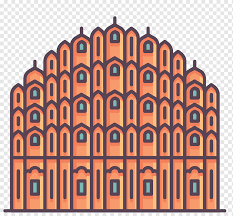

The Hawa Mahal is a palace in the city of Jaipur, Rajasthan, India. Built from red and pink sandstone, it is on the edge of the City Palace, Jaipur, and extends to the Zenana, or women's chambers. Hawa Mahal is known as the “ palace of winds “. Maharaja Sawai Pratap Singh built it palace in 1799. Hawa Mahal is considered to be unique as it has many small windows and balconies that seem like a honeycomb.[1] The structure was built in 1799 by the Maharaja Sawai Pratap Singh, grandson of Maharaja Sawai Jai Singh, the founder of the city of Jhunjhunu in the state of Rajasthan. It was designed by Lal Chand Ustad. Its five-floor exterior is akin to a honeycomb with its 953 small windows called Jharokhas decorated with intricate latticework.[3] The original intent of the lattice design was to allow royal ladies to observe everyday life and festivals celebrated in the street below without being seen. This architectural feature also allowed cool air from the Venturi effect to pass through, thus making the whole area more pleasant during the high temperatures in summer. In 2006, renovation works on the Mahal were undertaken, after a gap of 50 years, to give a facelift to the monument at an estimated cost of Rs 4.568 million.[7] The corporate sector lent a hand to preserve the historical monuments of Jaipur and the Unit Trust of India has adopted Hawa Mahal to maintain it.[8] The palace is an extended part of a huge complex. The stone-carved screens, small casements, and arched roofs are some of the features of this popular tourist spot. The monument also has delicately modelled hanging cornices.
This palace is a five-storey pyramidal shaped monument that rises to about 50 feet (15 m). The top three floors of the structure have the width of a single room, while the first and second floors have patios in front of them. The front elevation, as seen from the street, is like a honeycomb with small portholes. Each porthole has miniature windows and carved sandstone grills, finials and domes. It gives the appearance of a mass of semi-octagonal bays, giving the monument its unique façade. The inner face on the back side of the building consists of chambers built with pillars and corridors with minimal ornamentation, and reach up to the top floor. The interior of the palace has been described as "having rooms of different coloured marbles, relieved by inlaid panels or gilding, while fountains adorn the centre of the courtyard".[9][10] Lal Chand Ustad was the architect. Built-in red and pink coloured sandstone, in keeping with the décor of the other monuments in the city, its colour is a full testimony to the epithet of "Pink City" given to Jaipur. Its façade with 953 niches with intricately carved jharokhas (some are made of wood) is a stark contrast to the plain-looking rear side of the structure. Its cultural and architectural heritage is a reflection of a fusion of Hindu Rajput architecture and Islamic Mughal architecture; the Rajput style is seen in the form of domed canopies, fluted pillars, lotus, and floral patterns, and the Islamic style is evident in its stone inlay filigree work and arches (as distinguished from its similarity with the Panch Mahal at Fatehpur Sikri).[11]
Rajput architecture is an architectural style associated with the forts and palaces of the many Rajput rulers. Many of the Rajput forts are UNESCO World Heritage Sites and popular tourist attractions. Rajput architecture represents different types of buildings, which may broadly be classed either as religious or military. These include temples, forts, stepwells, gardens, and palaces. The forts were specially built for defense and military purposes.[1] The Mughal and European architecture influenced indigenous Rajput styles of art and architecture.[1][2] Rajput architecture continued well into the 20th and 21st centuries, as the rulers of the princely states of British India commissioned vast palaces and other buildings, such as the Albert Hall Museum, Lalgarh Palace, and Umaid Bhawan Palace. These usually incorporated European styles as well, a practice which eventually led to the Indo-Saracenic style.[3] The Hill Forts of Rajasthan (Amer, Chittor, Gagron, Jaisalmer, Kumbhalgarh, Ranthambore), a group of six forts built by various Rajput kingdoms and principalities during the medieval period, are among the best examples of Rajput architecture. The ensemble is also a UNESCO World Heritage Site. Other forts include the Mehrangarh Fort and Jaigarh Fort.